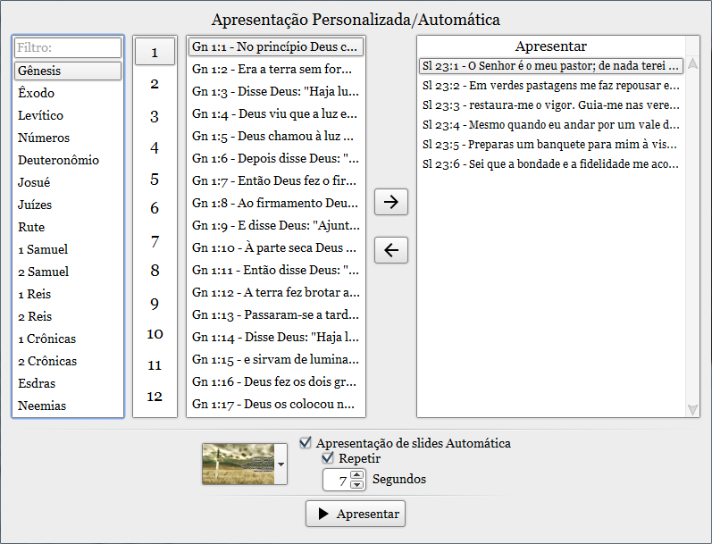
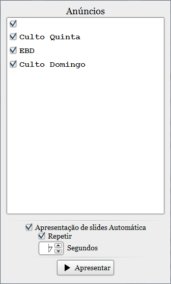

Inicie uma apresentação automática de anúncios ou versículos fazendo uma seleção do que deseja exibir.
Você pode controlar a apresentação ou marcar a opção "Apresentação de slides Automática", configurando a duração de cada slide e se eles irão ficar se repetindo.

